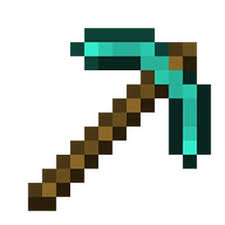

Always mine with a pickaxe on Y-level -59 for the best diamonds and ancient debris on Y-level -15.

Use Efficiency V pickaxes to mine faster and save your durability on lower levels by unbreaking III.

⬅ Back to main pageAlways mine with a pickaxe on Y-level -59 for the best diamonds and ancient debris on Y-level -15.
Use Efficiency V pickaxes to mine faster and save your durability on lower levels by unbreaking III.

⬅ Back to main page